class: center, middle --- - <a href="https://geojson.io" target="_blank">Geojson.io</a> --- #### Software / Environment Setup <img src="tutorials/envSetup/rivanna.png" alt="" style="width: 100%;"/> --- #### Software / Environment Setup <img src="tutorials/envSetup/fileExplorer.png" alt="" style="width: 100%;"/> --- #### Software / Environment Setup <img src="tutorials/envSetup/gisData.png" alt="" style="width: 100%;"/> --- #### Software / Environment Setup type "git remote -v" to check your repo matches what is below. type "git pull" to update repo 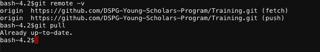 If you have a different Repo, you can remove the current remote repo with: “git remote remove origin” Then add the correct remote repo with: “git remote add origin https://github.com/DSPG-Young-Scholars-Program/Training.git” --- #### Software / Environment Setup 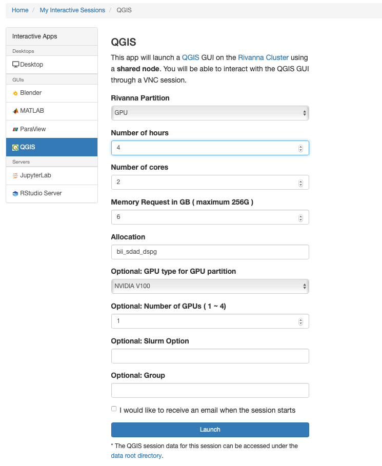 --- #### Software / Environment Setup <img src="tutorials/envSetup/qgisLaunch2.png" alt="" style="width: 80%;"/> --- #### Intro to GIS: GIS Data Types - Vector data - Points - Lines - Polygons - Raster Data - LiDAR Data - Triangulated Irregular Network (TIN) #####Additional Resources - <a href="https://unearthlabs.com/gis-data/" target="_blank">Introduction to GIS Data</a> - <a href="https://www.gislounge.com/geodatabases-explored-vector-and-raster-data/" target="_blank">Types of GIS Data Explored: Vector and Raster</a> - <a href="https://gisgeography.com/spatial-data-types-vector-raster/" target="_blank">Vector vs Raster: What’s the Difference Between GIS Spatial Data Types?</a> <img src="tutorials/introGIS/dataTypes.png" alt="" style="width: 60%;"/> --- #### Intro to GIS: Raster Data Aerial imagery and weather radar <img src="tutorials/introGIS/raster.png" alt="" style="width: 90%;"/> --- #### Intro to GIS: LiDAR Derived Elevation <img src="tutorials/introGIS/lidar.png" alt="" style="width: 90%;"/> --- #### Intro to GIS: File formats There are several GIS file formats, a few common ones include: - Shapefiles (SHP) *A standard GIS format* - GeoJSON - GeoTIFF - GeoPackage *Common to QGIS and other opensource software* - CSV - KML/KMZ - Geodatabases GDB (commonly used in ESRI products) Shapefiles are made up of multiple files (green are required) 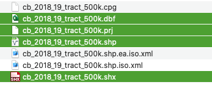 --- #### Intro to GIS: Shapefiles **.SHP** the main file, contains the shape coordinates: essentially describing all the basic shapes within the file. **.SHX** an index file, which helps the GIS software to find features more quickly within the main SHP file. **.DBF** a dbase file that contains all the attribute data for the features found in the .shp and .shx. **.PRJ** while not required, very desirable. This file contains information on which projection to use when displaying the data. --- #### Map Projections <img src="tutorials/introGIS/webMercator.png" alt="" style="width: 50%;"/> WGS 1984 Web Mercator Auxiliary Sphere 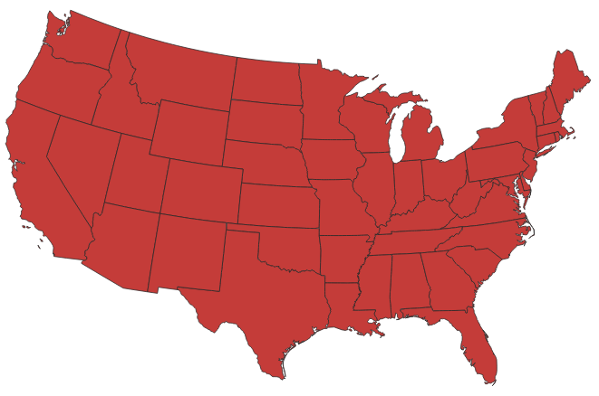 NAD 83 UTM 15N --- #### Map Projections <img src="https://images.newscientist.com/wp-content/uploads/2018/08/17165554/mercator_jpeg.jpg?width=800" alt="" style="width: 100%;"/> https://www.newscientist.com/article/2177132-new-world-map-is-a-more-accurate-earth-and-shows-africas-full-size/ --- #### Map Projections https://www.visualcapitalist.com/map-true-size-of-africa/ <img src="https://2oqz471sa19h3vbwa53m33yj-wpengine.netdna-ssl.com/wp-content/uploads/2020/02/true-size-of-africa.jpg" alt="" style="width: 80%;"/> --- #### Intro to GIS: GeoJSON.io We will start out by using a program that is not actually a GIS, but is a great helper tool for creating GIS files and learning about attributes and geometry Please open up https://GeoJSON.io and follow along! 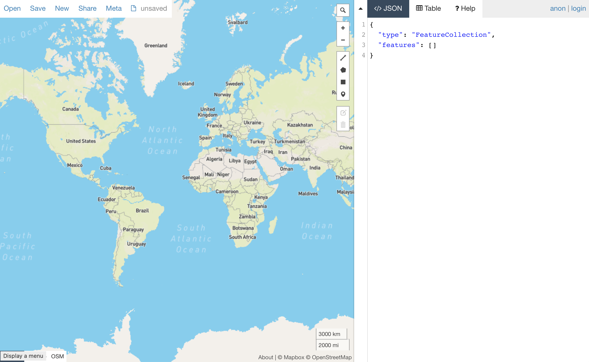 --- #### Intro to GIS: GeoJSON.io Beware of the order of latitude and longitude! <img src="tutorials/introGIS/geojson-io.png" alt="" style="width: 100%;"/> --- #### GeoJSON and GitHub 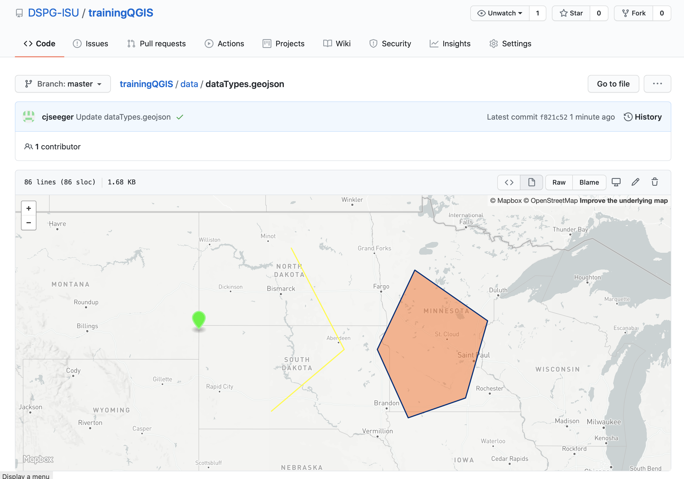 --- #### QGIS Interface <img src="tutorials/introGIS/qgisInterface.png" alt="" style="width: 100%;"/> --- #### QGIS Import Sources <img src="tutorials/introGIS/fileImports.png" alt="" style="width: 50%;"/> --- #### Customize Interface 1. Add Favorite link to the data directory and rename it DSPG Data 2. Manage and install two plugins - Processing - qgis2web <img src="tutorials/introGIS/qgisPlugins.png" alt="" style="width: 80%;"/> --- #### Add Data and Make a Thematic Map 1. Start a new map 1. Add the vacation.shp file 1. Map Navigation 1. Inspect the layer's attribute (feature) table 1. Select (and info) and Query the map features 1. Symbolize the map features 1. Query the map features 1. Filter the attribute table 1. Edit the feature table 1. Add feature labels 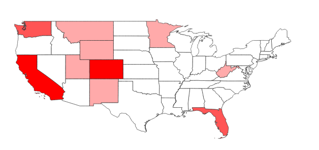 --- #### Census Data - Geographic Outlines of States and County can be downloaded from Census Tiger Data 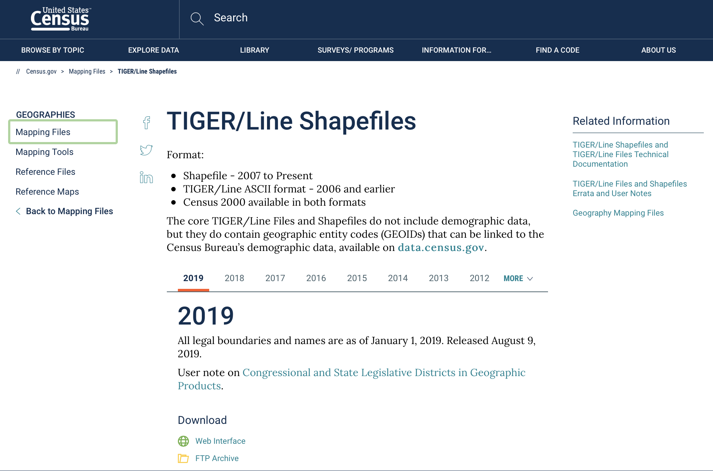 --- #### Census Data - Geographic Cartographic Boundary Files - Shapefile https://www.census.gov/geographies/mapping-files/time-series/geo/carto-boundary-file.html 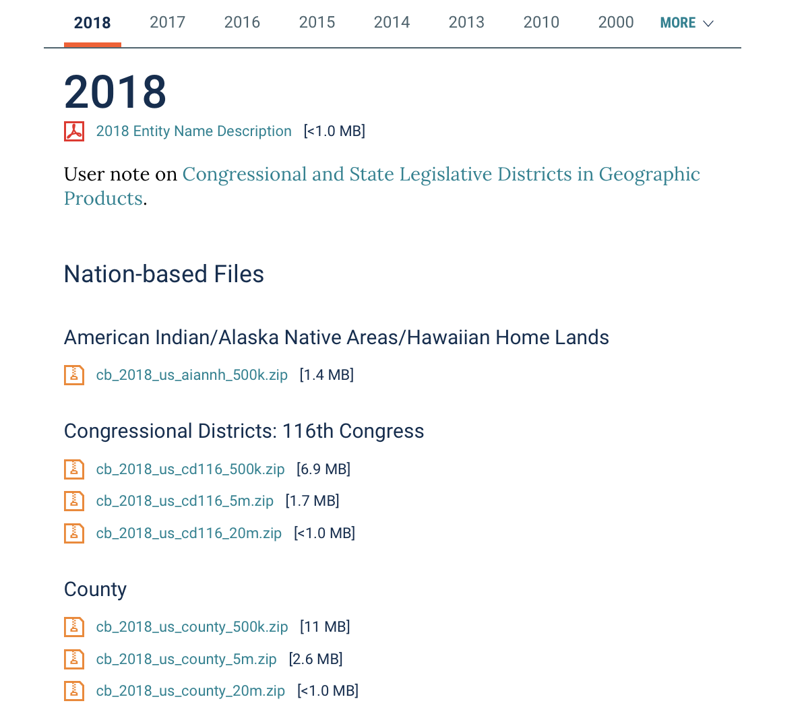 --- #### Census Data - Tabular American Community Survey Data Profiles https://www.census.gov/acs/www/data/data-tables-and-tools/data-profiles/ <img src="tutorials/introGIS/acs.png" alt="" style="width: 80%;"/> --- #### Mapping Census Data (Table Joins) 1. Accessing Census Data and Geometry 1. Cleaning Census Data 1. Start New Map and add US County data as 20 or 5 meter 1. Symbolize by State, add state layer and hide county lines 1. Joining Census Data to map Geometry using GEOID values 1. Query and Symbolize the data 1. Explore the attributes table (time permitting) 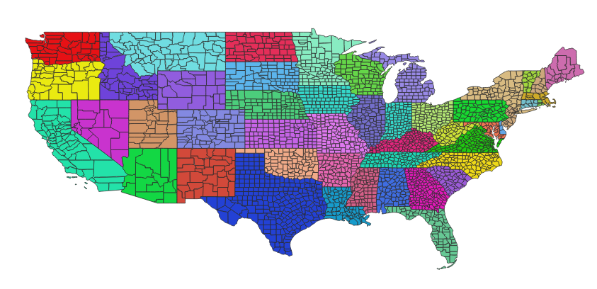 --- #### Selected Census Fields - **DP02_0001E** Total households (Estimates) - **DP02_0059PE** Population 25 years and over-Less than 9th grade (Percent) - **DP02_0151E** Total households with a computer (Estimate) - **DP02_0151M** Total households with a computer (MOE) - **DP02_0151PE** Total households with a computer (Percent) - **DP02_0151PM** Total households with a computer (Percent MOE) - **DP02_0152E** Households with a broadband Internet subscription (Estimate) - **DP02_0152M** Households with a broadband Internet subscription (MOE) - **DP02_0152PE** Households with a broadband Internet subscription (Percent) - **DP02_0152PM** Households with a broadband Internet subscription (Percent MOE) 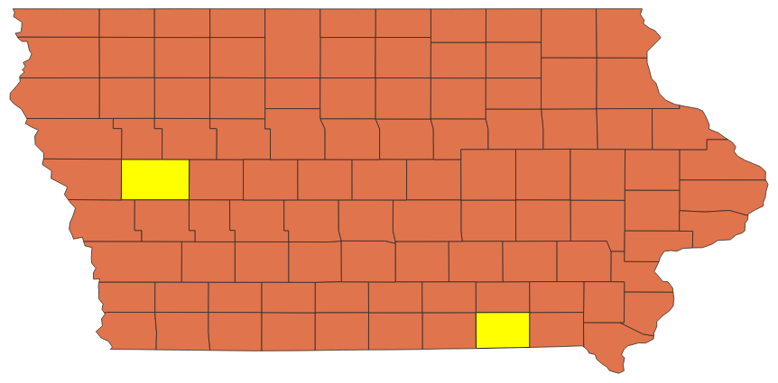 --- #### Mapping Crash Data - Acquiring the data Data Source <a href="https://icat.iowadot.gov" target="_blank"> Iowa DOT Crash Analysis Tool </a> 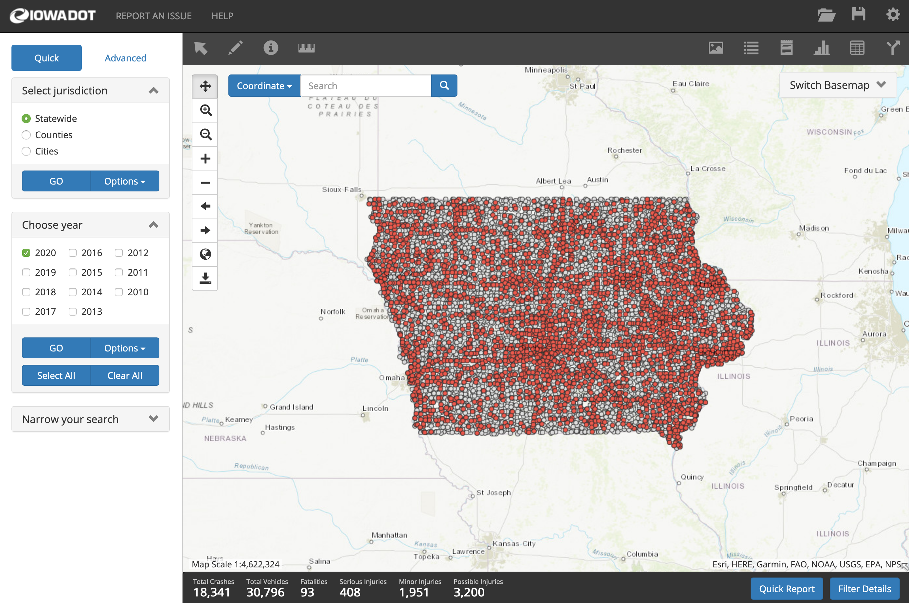 --- #### Mapping Crash Data - Acquiring the data Select 2010 and then a condition where driver was under the influence = 1,976 crashes 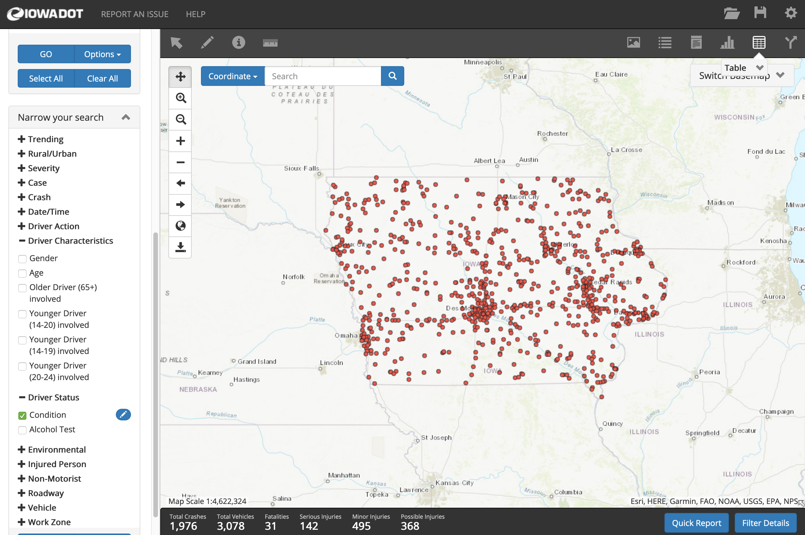 --- #### Mapping Crash Data - Acquiring the data Display tabular data, note X and Y coordinate system is UTM NAD 83 Zone 15 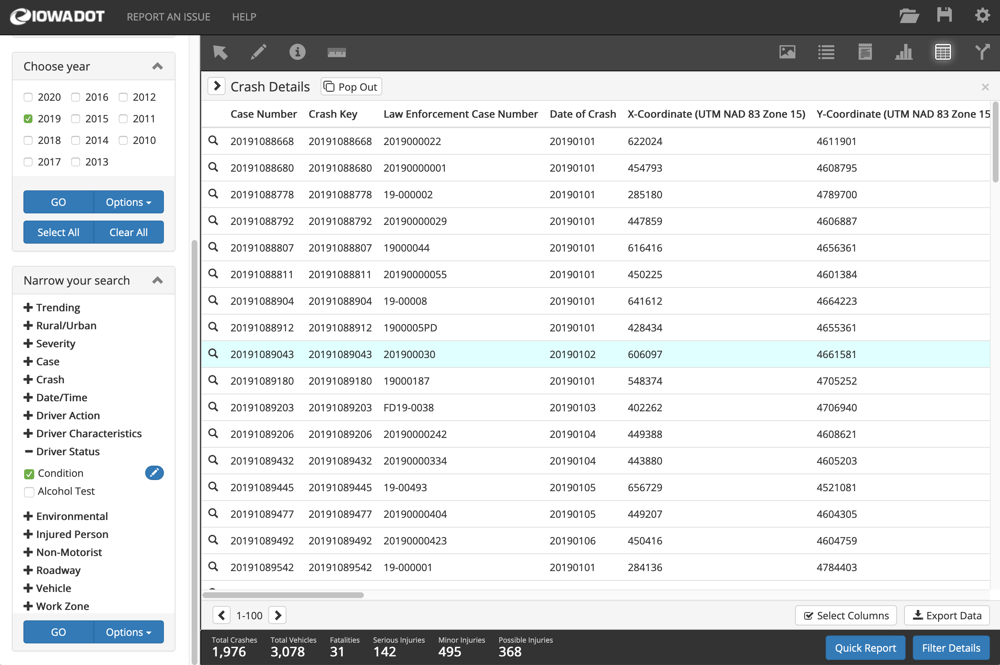 --- #### Mapping Crash Data - Acquiring the data Select columns to export 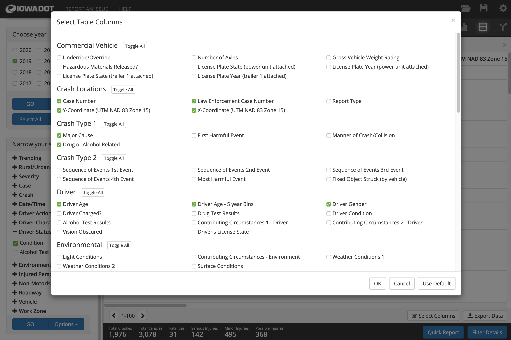 --- #### Mapping Crash Data - Acquiring the data Review the data before and after export to a csv 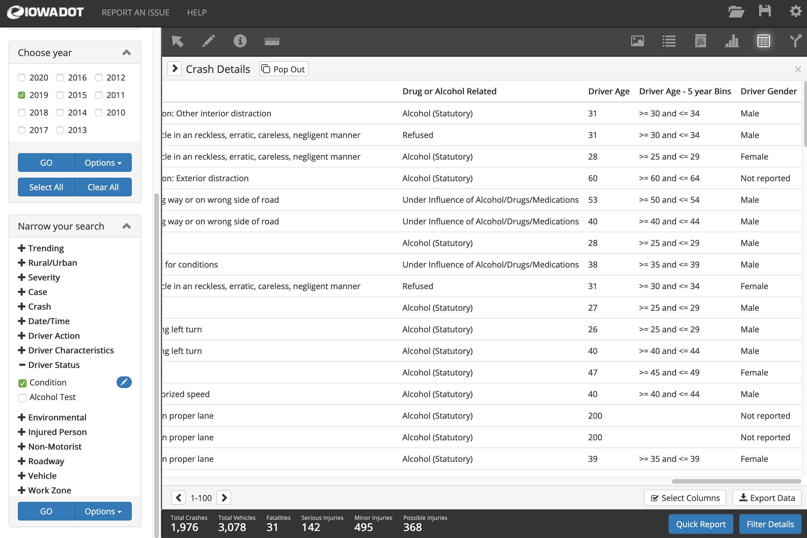 --- #### Mapping Crash Data - Adding CSV to QGIS ??? If you were doing a table join of just tabular data you could just add the CSV layer ... 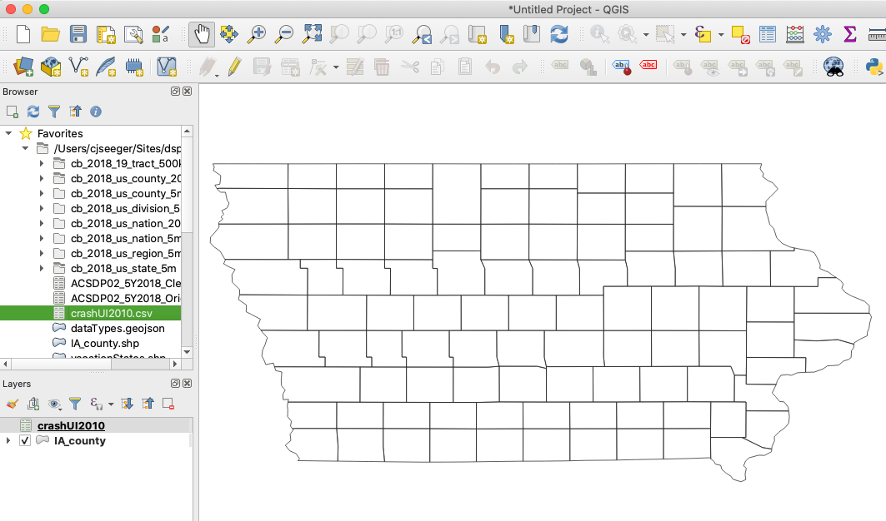 --- #### Mapping Crash Data - Adding CSV to QGIS And then you might think you could go find a tool (not this one) to convert it to points ... There is an easier way! 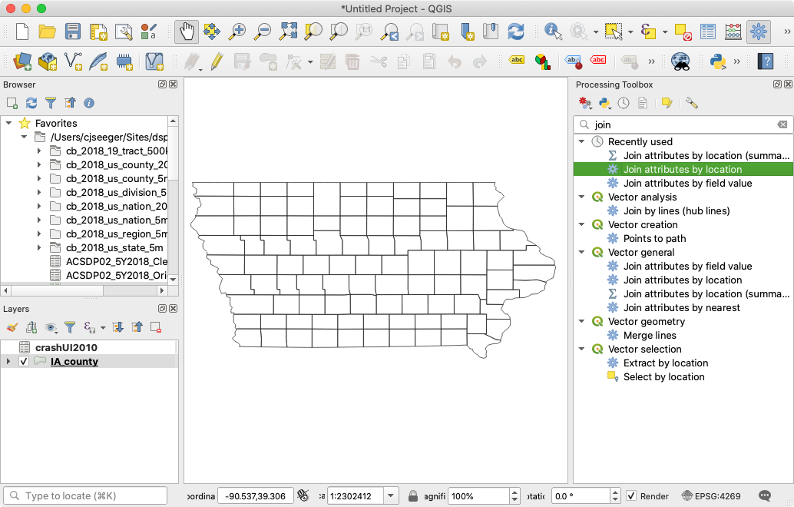 --- #### Mapping Crash Data - Adding CSV to QGIS https://www.qgistutorials.com/en/docs/importing_spreadsheets_csv.html Add the layer as a Delimited Text Layer 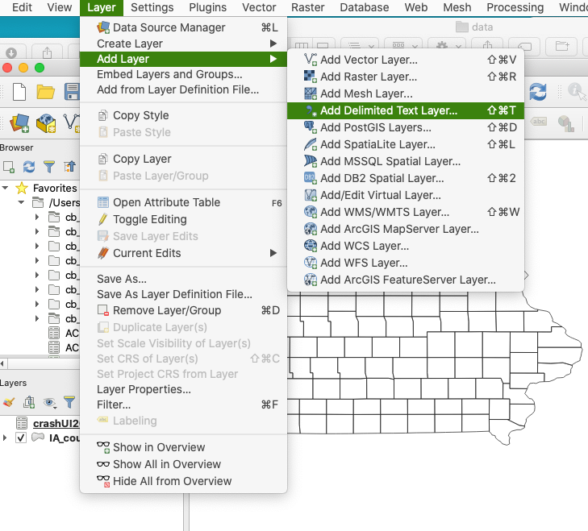 --- #### Mapping Crash Data - Adding CSV to QGIS Note the Point coordinates and Geometry CRS / Projection 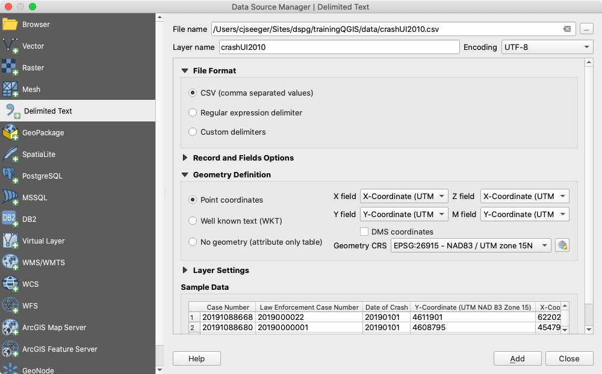 --- #### Mapping Crash Data - Crash Points Mapped *Note the point lower left of Iowa* <img src="tutorials/introGIS/iowaCrashData10.png" alt="" style="width: 90%;"/> --- #### Mapping Crash Data - Crash Points Mapped Once the points are located you can query them. 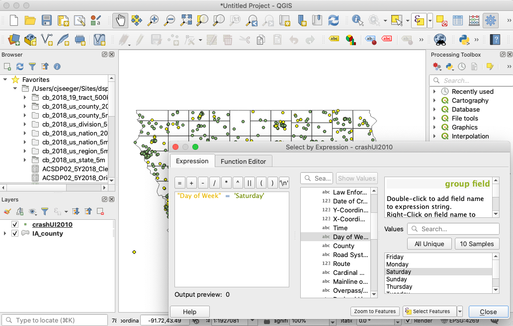 --- #### Mapping Crash Data - creating a Spatial Table Join 1. Start New Map 1. Spatial Join (Join Attributes by Location Summary ) 1. Map Symbolization II 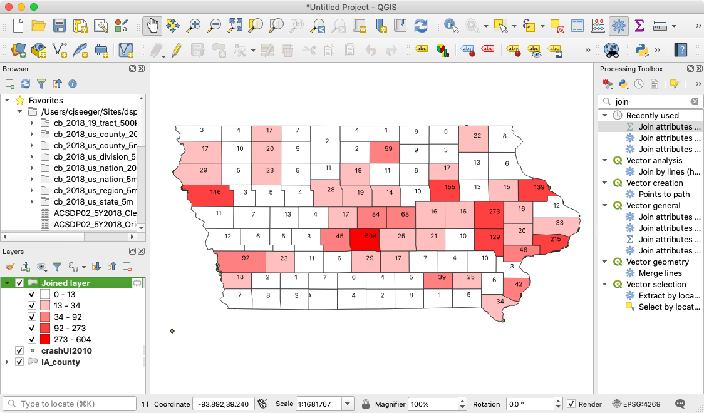 --- #### Geoprocessing 1. Intro to Geoprocessing: Summer Roadtrip Route (Buffers and Intersect) 1. Map Print Layout <img src="tutorials/introGIS/bufferIntersect.png" alt="" style="width: 80%;"/> --- #### Wrap Up 1. Create an OpenStreetmap Account for next week! https://www.openstreetmap.org 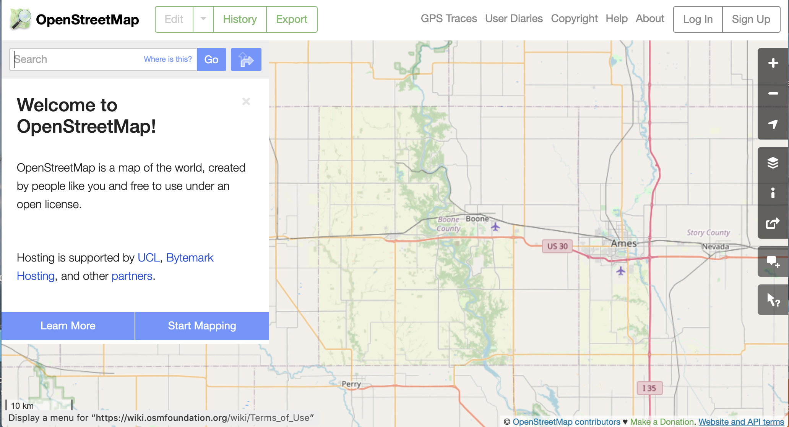 --- #### QGIS, GIS and Mapping Training Resources - QGIS - <a href="https://www.extension.iastate.edu/communities/gis/quicktasksheets" target="_blank"> ISU GIS Tasksheets </a> (A full list of these will be distributed next week) - <a href="https://www.qgistutorials.com/en/" target="_blank"> QGIS Tutorials and Tips </a> - <a href="https://docs.qgis.org/3.10/en/docs/user_manual/index.html" target="_blank"> QGIS User Guide </a> - GeoJSON Utilites - Mapshaper https://mapshaper.org - <a href="https://jasonheppler.org/courses/csu-workshop/geojson-utilities.html" target="_blank"> GeoJSON Utilities List </a> - Web Mapping - Leaflet https://leafletjs.com - Leaflet https://leaflet-extras.github.io/leaflet-providers/preview/ - Turf https://turfjs.org/docs/ ##https://dspg-isu.github.io/trainingQGIS/ --- Create an OpenStreetMap account <video preload="auto" width="100%" height="auto" data-setup="{}" controls><source src="prep/midwest.mp4" type="video/mp4" /></video>